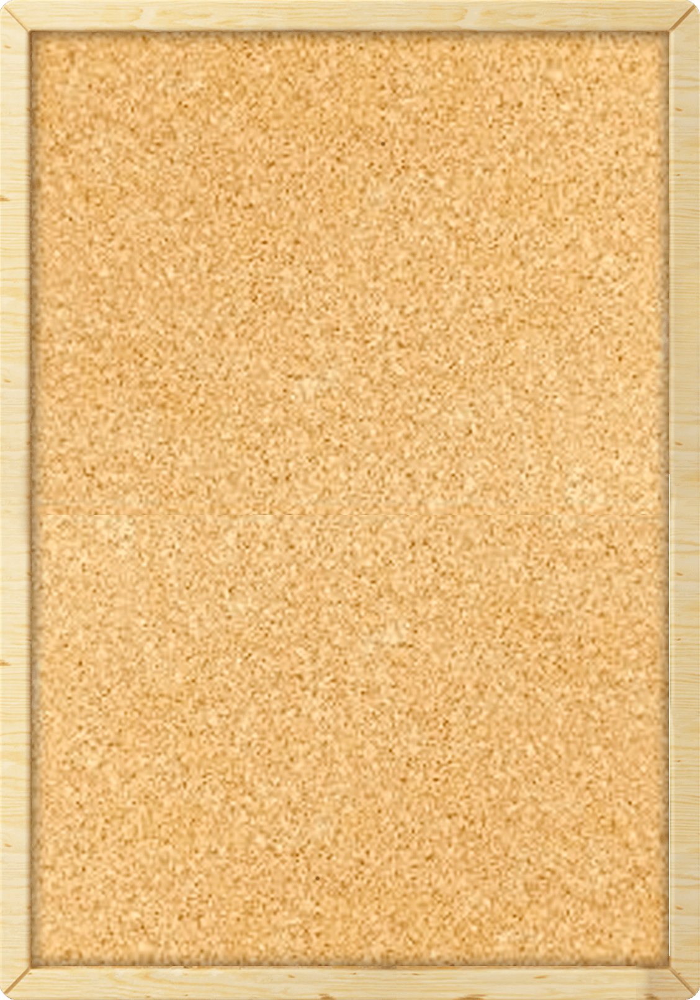

<ion-header class="ion-no-border">
    <ion-toolbar>
        <ion-buttons slot="start">
            <ion-back-button style="color: white" icon="arrow-back"></ion-back-button>
        </ion-buttons>
        <ion-title>Bulletin Board</ion-title>
    </ion-toolbar>
</ion-header>

<ion-content>

    <div class="main-container">

        

    </div>

</ion-content>